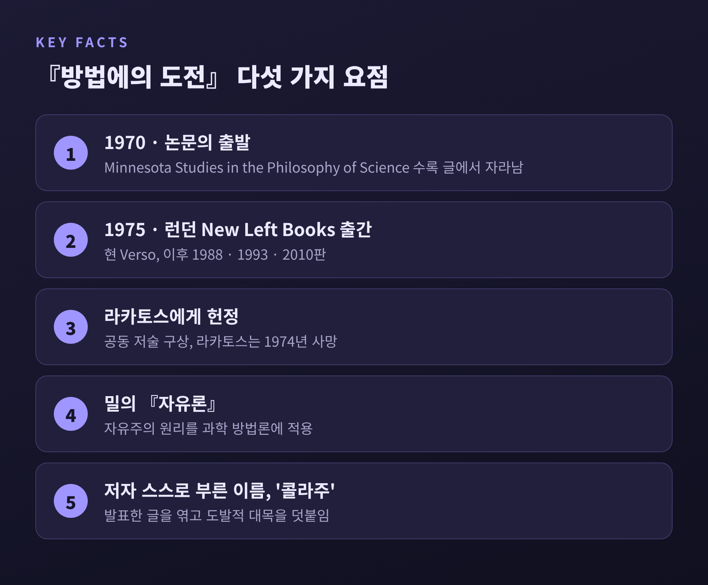
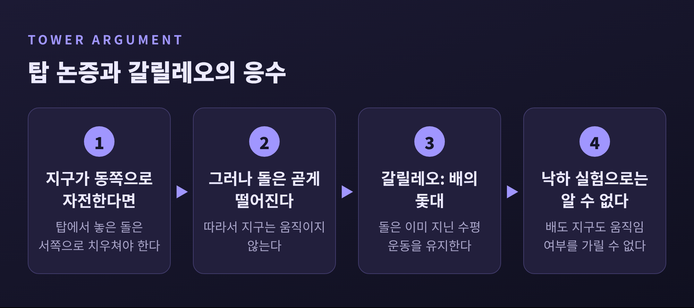

오늘은 파이어아벤트의 『방법에의 도전』과 "무엇이든 좋다(anything goes)"라는 유명한 구호를 정리해 보려 합니다.
먼저 결론부터 말씀드리면, 이 구호는 "아무렇게나 해도 된다"는 권유가 아닙니다.
저자 스스로 이 말을 합리주의자가 역사를 들여다보다 내지르는 비명에 가깝다고 설명했습니다.
갈릴레오 사례와 포퍼·쿤·라카토스와의 대비를 따라가며 그 뜻을 차근차근 짚어 보겠습니다.
『방법에의 도전(Against Method)』은 1975년 런던의 New Left Books(현 Verso)에서 나왔습니다.
뿌리는 1970년에 발표된 논문입니다. 『Minnesota Studies in the Philosophy of Science』 시리즈에 실린 글이 책으로 자랐습니다.
저자 폴 파이어아벤트는 1924년 빈에서 태어나 1994년 스위스에서 세상을 떠났습니다.
1958년부터 1990년까지 버클리에서 가르쳤고, 1980년대에는 취리히 공대에도 자리를 두었습니다.
런던정치경제대학(LSE)에서는 포퍼의 지도를 받았습니다. 처음에는 반증주의를 받아들였지만 훗날 이른바 "포퍼 교회"와 결별합니다.
이 책에는 사연이 하나 있습니다.
친구인 임레 라카토스가 『For and Against Method』라는 공동 저술을 구상했습니다. 라카토스는 합리성을 옹호하고, 파이어아벤트는 비판하는 쪽이었습니다.
그러나 라카토스는 1974년 51세에 심장마비로 급사했습니다. 남은 것이 파이어아벤트의 몫, 곧 『방법에의 도전』입니다. 책은 라카토스에게 헌정되었습니다.
본인은 이 책을 "콜라주"라고 불렀습니다. 이미 발표한 글들을 엮고 연결 부분과 "더 도발적인" 대목을 덧붙였다는 뜻입니다.
밀의 『자유론』을 과학 방법론에 적용해 보려 했다는 설명도 따라붙습니다.

문제의 문장은 1장에 나옵니다.
"진보를 가로막지 않는 유일한 원리는 '무엇이든 좋다'이다."
이 문장만 떼어 읽으면 방법 따위는 필요 없다는 선언처럼 보입니다. 오해는 대개 여기서 시작됩니다.
그런데 같은 책 서문에는 다른 설명이 있습니다. "무엇이든 좋다"는 자신이 지지하는 원리가 아니라 "역사를 더 자세히 들여다본 합리주의자의 겁에 질린 외침"이라는 것입니다.
2장에는 더 분명한 단서가 있습니다.
"나의 의도는 한 세트의 일반 규칙을 다른 세트로 바꾸려는 것이 아니다."
서문에서는 낡고 독단적인 원리를 새롭고 자유로운 원리로 대체하려는 것도 아니라고 밝힙니다.
그렇다면 왜 '무정부주의'라는 말을 썼을까요.
라카토스가 반쯤 농담으로 그를 무정부주의자라 불렀고, 파이어아벤트는 그 가면을 쓰는 데 이의가 없었다고 적었습니다.
2장의 비유가 더 흥미롭습니다. 무정부주의자는 이성의 권위를 허물기 위해 이성의 게임을 하는 첩보원과 같다고 했습니다.
규칙을 버리자는 사람이 아니라, 규칙의 게임 안에서 규칙의 권위를 시험하는 사람이라는 뜻입니다.
책의 중심 사례는 천동설에서 지동설로 넘어가는 과정, 그중에서도 갈릴레오입니다.
파이어아벤트는 당시 아리스토텔레스 운동론이 경험과 논증 양면에서 탄탄한 지지를 받았다고 주장합니다.
대표적인 것이 탑 논증입니다.
지구가 동쪽으로 자전한다면 높은 탑에서 떨어뜨린 돌은 서쪽으로 치우쳐 떨어져야 합니다. 그런데 돌은 탑 아래로 곧게 떨어집니다. 지구는 움직이지 않는다는 결론이 나옵니다.
갈릴레오는 배의 비유로 응수했습니다.
등속으로 달리는 배의 돛대에서 돌을 놓으면 돛대 아래에 떨어집니다. 돌이 이미 지닌 수평 운동을 그대로 유지하기 때문입니다. 낙하 실험만으로는 배가, 곧 지구가 움직이는지 알 수 없다는 논리입니다.
파이어아벤트가 주목한 지점은 다음입니다.
탑 논증은 "돌이 곧게 떨어진다"는 관찰이 곧 지구 정지의 증거라고 여기는 '자연스러운 해석'에 기대고 있었습니다. 이 해석은 관찰과 너무 밀접해서, 그 존재를 알아차리려면 특별한 노력이 필요합니다.
갈릴레오는 관찰 자체를 부정한 것이 아니라 관찰을 읽는 틀을 바꾸었습니다. 이 과정에서 해석에 따라서는 임시변통으로 보일 수 있는 장치도 동원했다고 파이어아벤트는 봅니다. 2차 문헌은 이를 새 견해가 자리 잡을 시간을 버는 "창조적 속임수"로 요약합니다.
망원경에도 같은 문제가 있었습니다.
갈릴레오는 1609년 베네치아에서 네덜란드 망원경 소식을 듣고 약 20배율짜리를 만들었습니다. 1610년 3월 『별의 전령』에서 달의 산과 목성의 위성 네 개를 알렸고, 같은 해 후반에는 금성의 위상도 관찰했습니다.
다만 파이어아벤트는, 갈릴레오가 망원경이 하늘의 참모습을 보여 준다고 기대할 이론적 근거를 내놓지 않았다고 짚습니다. 육안보다 망원경을 믿을 이유가 그때는 충분히 마련되어 있지 않았다는 것입니다.

사례들에서 파이어아벤트가 끌어낸 처방이 두 가지입니다.
첫째는 반유도(counterinduction)입니다. 2장의 표현은 이렇습니다. "잘 확증된 이론이나 잘 확립된 실험 결과와 모순되는 가설을 써도 된다."
정설을 끝없이 보강하는 귀납에만 기대지 말고, 정설과 충돌하는 가설을 일부러 세워 보라는 것입니다. 갈릴레오는 코페르니쿠스와 아리스타르코스를 두고 "반유도적으로 나아갔다"고 칭찬했습니다.
둘째는 증식(proliferation) 원리입니다. 인정된 관점과 양립 불가능한 이론들을 계속 만들어 내라는 요구입니다.
밀의 생각을 따라, 지식은 하나의 정합적 견해로 수렴하며 자라는 것이 아니라 경쟁하는 대안이 여럿 있을 때 자란다고 봅니다.
여기에 방법론적 다원주의의 핵심이 있습니다.
방법을 없애자는 것이 아닙니다. 방법을 하나로 못 박지 말고 여러 개를 경쟁시키자는 주장입니다. 성공적인 연구는 일반 기준을 따르지 않고 "때로는 이런 요령, 때로는 저런 요령"에 의존한다는 것이 그의 관찰이었습니다.
세 사람은 모두 파이어아벤트와 같은 무대에 서 있었습니다. 차이는 '규칙'을 다루는 방식에 있습니다.
포퍼는 반증 가능성을 과학과 비과학의 경계 기준으로 삼았습니다. 이론은 관찰과 충돌할 수 있어야 하고, 지식은 "잠정적·추측적·가설적"이라고 보았습니다.
파이어아벤트는 이 기준에 반대했습니다. 반증주의 같은 조건이 새 이론에 제약을 얹어 진보를 막는다고 보았기 때문입니다. 갈릴레오의 이론이 아리스토텔레스보다 경험적 내용이 적고 새 예측도 없었다는 점도 그 증거로 꼽힙니다.
쿤은 1962년 『과학혁명의 구조』에서 정상과학, 변칙의 누적, 위기, 혁명으로 이어지는 그림을 내놓았습니다. 패러다임 선택은 규칙으로 강제되지 않는다고 했습니다.
파이어아벤트도 같은 시기에 공약불가능성을 전개했습니다. 다만 쿤이 자기 책의 비합리주의적 함의를 누그러뜨린다고 보았고, 그 몫은 자신이 맡았다고 여겼습니다. 두 사람은 1960년대 비판 이후 1983년까지 불화했습니다.
라카토스는 이론 하나가 아니라 '연구 프로그램'의 연속열을 평가하자고 했습니다. 견고한 핵을 보호대가 감싸고, 새로운 사실을 예측하면 진보적, 그러지 못하면 퇴행적 프로그램이 됩니다. 포퍼와 쿤 사이의 중도였습니다.
파이어아벤트는 이 방법론에 근거 없는 가치 판단이 섞여 있거나, 결국 "변장한 무정부주의"라고 했습니다. 친구에게 던진 농담 섞인 도전이었던 셈입니다.
"무엇이든 좋다"를 둘러싼 오해는 크게 네 가지로 나뉩니다.
첫째, 증거나 논증이 필요 없다는 뜻이라는 오해입니다. 파이어아벤트는 책 전체에서 사례와 논증을 촘촘히 씁니다. 2차 문헌은 이를 임의성에 대한 호소가 아니라 합리주의 방법론에 대한 귀류법이라 정리합니다.
둘째, 새 규칙을 세우자는 선언이라는 오해입니다. 2장은 한 세트의 규칙을 다른 세트로 바꾸려는 것이 아니라고 분명히 밝힙니다.
셋째, 과학이 사기라는 주장이라는 오해입니다. 그의 문제 제기는 과학을 하나의 확정된 방법으로 환원하는 철학에 있었습니다.
넷째, 비합리주의의 옹호라는 오해입니다. 그는 여전히 논증을 쓰고, 오히려 더 넓은 합리성 개념을 촉구했습니다.
이 책이 모든 물음에 답했다고 보기는 어렵습니다.
출간 직후 철학자들의 반응은 대체로 부정적이었습니다. 피론주의적 회의론이나 상대주의의 반복이라는 비판, 반유도 같은 방법을 권하니 자기모순이라는 비판, 허수아비를 공격한다는 비판이 나왔습니다.
"무엇이든 좋다"의 지위를 두고도 해석이 갈립니다. 귀류법으로 읽는 쪽이 있고, 존 프레스턴처럼 규범적 철학을 포기한 것으로 읽는 쪽이 있습니다. 1장의 문장이 긍정문의 형태라는 점도 오독의 여지를 키웠습니다.
파이어아벤트 본인도 반응에 놀랐습니다. 비판자들이 아이러니와 유희, 귀류법을 오독했다고 『자유 사회의 과학』에서 답했고, 책 이후 우울을 겪었다고 전해집니다.
"진리·실재·객관성" 같은 추상 개념에서 사람들을 풀어 주려다 "민주주의"나 "전통" 같은 비슷하게 경직된 개념을 끌어들였다는 점도 스스로 인정했습니다.
국내 학술 논의도 엇갈립니다. 서울대 『철학사상』 56호의 한 논문은 방법론 규범이 자주 어겨진다는 주장은 방법론을 지나치게 경직되게 해석할 때만 타당하다고 보고, 규범이 아예 역할을 해서는 안 된다는 가장 강한 주장은 논거가 부실하거나 제한적으로만 유효하다고 평가합니다.
한 가지 더 있습니다. 한 연구자는 파이어아벤트의 코페르니쿠스 사건 분석이 "anything goes"라는 결론까지 뒷받침하지는 못한다고 논합니다.
정리하면 이렇습니다.
"무엇이든 좋다"는 허용의 선언이 아니라 경고입니다. 단 하나의 방법을 절대화하면 갈릴레오 같은 전환이 일어나지 못했을 것이라는 경고입니다.
규칙을 버리라는 말이 아니라 규칙을 시험하라는 말로 읽을 때, 이 구호는 가장 쓸모가 있다고 생각합니다.
방법은 과학을 지키는 울타리일까요, 아니면 과학이 넘어서야 할 담일까요. 이 책을 덮고 나서 쉽게 답이 나오지 않는다면, 그것이 저자가 바랐던 독서일 것입니다.